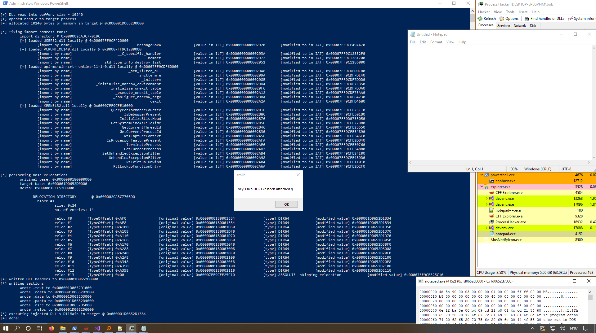

# Manually Map DLL - Basic version with no imports
•
https://github.com/rootm0s/Injectors/blob/master/ManualMapDll/inject_darawkMethod.cThis is the most basic form of DLL manual mapper.
It:
• loads the DLL into a local buffer
• fixes its imports
• performs base relocations
• allocates memory in the target process
• maps the DLL into the target by writing its headers first, followed by its sections
• starts execution of the DLL by starting a
CreateRemoteThread at the at the address of the injected DLL's
DllMain function
### The problem with this basic version
The problem with this technique is that extra libraries that are required by your DLL aren't loaded into the target process.
This is because we don't execute any extra code in the target process to load them.
e.g. you use
MessageBoxA in your DLL, this requires
USER32.dll to be loaded in the target process. If it's not, your call to
MessageBoxA will fail.
If you want to use WinAPI functions in your DLL, that WinAPI functions's DLL must already be loaded in the target process.
## Demo
This is the DLL I'm injecting.
We're not using a reason and a switch case in this DLL because when we pass execution to the
DllMain with
CreateRemoteThread we don't pass any parameters.
#include <Windows.h>
void Hello(void)
{
MessageBoxA(NULL, "hey! i'm a DLL. i've been attached :)", "smile", MB_OK);
return;
}
BOOL WINAPI DllMain(HINSTANCE hinstDLL, DWORD fdwReason, LPVOID lpReserved)
{
Hello();
return TRUE;
}
I'm injecting into
notepad.exe, which has a PID of
4152In my DLL I'm using
MessageBoxA.
MessageBoxA will run because notepad is a GUI application and USER32.dll (which contains MessageBoxA) will almost definitely be loaded.
I run my manual mapper in an Administrator PowerShell prompt and give it the target PID and the DLL to inject.
And our manual mapper injects the DLL into the target.
• in the PowerShell window you can see the manual mapper's output.
• in the taskbar you'll see that Notepad has 2 windows - the notepad window and our injected MessageBoxA
• in the bottom right you can see the injected DLL's DOS header at address
0x000001D0652D0000## Code
/*
Manually map a DLL into a target process.
This code:
- loads the DLL locally
- fixes its Import Address Table
- performs base relocations
- allocates memory in the target process for the DLL
- writes the DLL's headers
- writes the DLL's sections
- creates a remote thread at the the injected DLL's DllMain function
NOTE #1:
Imported functions from DLLs not already present in the target process will fail.
This is because we're not running any extra code in the target process to load extra libraries that our injected DLL might need.
If you want to use WinAPI functions in your DLL, that WinAPI function's DLL must already be loaded in the target process:
e.g. to use MessageBoxA in your DLL, USER32.dll must be loaded in the target process
NOTE #2:
We're not calling our DLL with DLL_PROCESS_ATTACH, so your DLL shouldn't use a switch case. Just leave it empty:
```
#include <Windows.h>
void Hello(void)
{
MessageBoxA(NULL, "hey! i'm a DLL. i've been attached :)", "smile", MB_OK);
return;
}
BOOL WINAPI DllMain(HINSTANCE hinstDLL, DWORD fdwReason, LPVOID lpReserved)
{
Hello();
return TRUE;
}
```
*/
#include <stdio.h>
#include <Windows.h>
typedef struct BASE_RELOCATION_ENTRY
{
USHORT Offset : 12;
USHORT Type : 4;
} BASE_RELOCATION_ENTRY, * PBASE_RELOCATION_ENTRY;
/*
Make sure to call free(file_buffer) after you're done.
*/
LPVOID ReadFileIntoBuffer(char* file_name, OUT DWORD* file_buffer_size)
{
LPVOID file_buffer = NULL;
BOOL b_ret = TRUE;
HANDLE h_file = NULL;
DWORD file_size = 0;
// open target file
h_file = CreateFileA(file_name, GENERIC_READ | GENERIC_WRITE, 0, NULL, OPEN_EXISTING, FILE_ATTRIBUTE_NORMAL, NULL);
if (h_file == INVALID_HANDLE_VALUE)
{
printf("[-] failed to open target file: %d \n", GetLastError());
goto cleanup;
}
// get file size
file_size = GetFileSize(h_file, NULL);
(*file_buffer_size) = file_size;
// create buffer to read file into
file_buffer = malloc(file_size);
// read file into buffer
b_ret = ReadFile(h_file, file_buffer, file_size, NULL, NULL);
if (b_ret == FALSE)
{
printf("[-] failed to read file into buffer: %d \n", GetLastError());
free(file_buffer);
goto cleanup;
}
cleanup:
if (h_file) CloseHandle(h_file);
return file_buffer;
}
/*
Convert VirtualAddress (address in memory) to raw address (address on disk).
Does so by finding which PE section your VirtualAddress is in,
subtracting the section's start address to find the relative virtual address,
and then adding the RVA to the start of the section on disk.
*/
DWORD va2raw(LPVOID file_buffer, DWORD va)
{
DWORD rva = 0;
DWORD raw_address = 0;
PIMAGE_DOS_HEADER dos_header = NULL;
PIMAGE_NT_HEADERS pe_header = NULL;
PIMAGE_SECTION_HEADER section_header = NULL;
// grab section header
dos_header = (PIMAGE_DOS_HEADER)file_buffer;
pe_header = (PIMAGE_NT_HEADERS)((DWORD_PTR)file_buffer + dos_header->e_lfanew);
section_header = IMAGE_FIRST_SECTION(pe_header);
if (va < section_header->PointerToRawData)
return va;
// loop through sections
for (int i = 0; i < pe_header->FileHeader.NumberOfSections; i++)
{
// find start and end of current section
DWORD section_start = section_header->VirtualAddress;
DWORD section_end = section_header->VirtualAddress + section_header->SizeOfRawData;
// if the provided RVA is within the bounds of this current section
if (va >= section_start && va < section_end)
{
// calculate raw address
rva = va - section_start;
raw_address = section_header->PointerToRawData + rva;
break;
}
// advance to next section
section_header += 1;
}
return raw_address;
}
BOOL ResolveImports(LPVOID file_buffer)
{
BOOL okay = TRUE;
PIMAGE_DOS_HEADER dos_header = NULL;
PIMAGE_NT_HEADERS pe_header = NULL;
PIMAGE_FILE_HEADER coff_header = NULL;
PIMAGE_OPTIONAL_HEADER pe_optional_header = NULL;
PIMAGE_IMPORT_DESCRIPTOR import_directory = NULL;
PIMAGE_THUNK_DATA import_lookup_table = NULL;
PIMAGE_THUNK_DATA import_address_table = NULL;
PIMAGE_IMPORT_BY_NAME import_name = NULL;
HANDLE h_library = NULL;
FARPROC import_address = NULL;
dos_header = file_buffer;
pe_header = (PIMAGE_NT_HEADERS)((DWORD_PTR)dos_header + (DWORD_PTR)dos_header->e_lfanew);
import_directory = (PIMAGE_IMPORT_DESCRIPTOR)((DWORD_PTR)file_buffer + va2raw(file_buffer, pe_header->OptionalHeader.DataDirectory[IMAGE_DIRECTORY_ENTRY_IMPORT].VirtualAddress));
printf("\t import directory @ 0x%p \n", import_directory);
// loop through DLLs
while (import_directory->Name != 0)
{
// grab DLL name
char* dll_name = (char*)((DWORD_PTR)file_buffer + va2raw(file_buffer, import_directory->Name));
// load DLL
h_library = LoadLibraryA(dll_name);
if (h_library == NULL)
return FALSE;
printf("\t [+] loaded %s locally @ 0x%p \n", dll_name, h_library);
import_lookup_table = (PIMAGE_THUNK_DATA)((DWORD_PTR)file_buffer + va2raw(file_buffer, import_directory->OriginalFirstThunk));
import_address_table = (PIMAGE_THUNK_DATA)((DWORD_PTR)file_buffer + va2raw(file_buffer, import_directory->FirstThunk));
// loop through imported functions in DLL
while (import_lookup_table->u1.AddressOfData != 0)
{
// if import by ordinal
if (IMAGE_SNAP_BY_ORDINAL(import_lookup_table->u1.Ordinal))
{
// grab import ordinal number
ULONGLONG import_ordinal = IMAGE_ORDINAL(import_lookup_table->u1.Ordinal);
printf("\t\t [import by ordinal] %37llx ", import_ordinal);
// grab function address from loaded library & write into Import Address Table
import_address = GetProcAddress(h_library, (LPCSTR)import_ordinal);
import_address_table->u1.Function = (ULONGLONG)import_address;
printf("\t\t [value in ILT] 0x%p \t [modified to in IAT] 0x%p \n", (LPVOID)import_lookup_table->u1.Function, import_address);
}
// if import by name
else
{
// grab import name from IMAGE_IMPORT_NAME struct
import_name = (PIMAGE_IMPORT_BY_NAME)((DWORD_PTR)file_buffer + va2raw(file_buffer, import_lookup_table->u1.AddressOfData));
printf("\t\t [import by name] %40s ", import_name->Name);
// grab function address from loaded library & write into Import Address Table
import_address = GetProcAddress(h_library, import_name->Name);
import_address_table->u1.Function = (ULONGLONG)import_address;
printf("\t\t [value in ILT] 0x%p \t [modified to in IAT] 0x%p \n", (LPVOID)import_lookup_table->u1.Function, import_address);
}
// advance to next function
import_lookup_table++;
import_address_table++;
}
// advance to next DLL
import_directory++;
}
return okay;
}
/*
Loop through relocation table and perform base relocations.
Uses raw addresses.
*/
BOOL PerformBaseRelocations(LPVOID file_buffer, LPVOID target_base)
{
BOOL okay = TRUE;
PIMAGE_DOS_HEADER dos_header = NULL;
PIMAGE_NT_HEADERS pe_header = NULL;
PIMAGE_FILE_HEADER coff_header = NULL;
PIMAGE_OPTIONAL_HEADER pe_optional_header = NULL;
PIMAGE_BASE_RELOCATION reloc_table = NULL;
PIMAGE_BASE_RELOCATION reloc_block = NULL;
PBASE_RELOCATION_ENTRY reloc_entry = NULL;
DWORD reloc_table_size = 0;
SIZE_T image_base_delta = 0;
dos_header = (PIMAGE_DOS_HEADER)file_buffer;
pe_header = (PIMAGE_NT_HEADERS)((DWORD_PTR)dos_header + (DWORD_PTR)dos_header->e_lfanew);
// calcuate difference in base addresses - the delta
image_base_delta = (SIZE_T)target_base - (SIZE_T)pe_header->OptionalHeader.ImageBase;
printf("\t original base: 0x%p \n", (LPVOID)pe_header->OptionalHeader.ImageBase);
printf("\t target base: 0x%p \n", target_base);
printf("\t delta: 0x%p \n\n", (LPVOID)image_base_delta);
if (image_base_delta == 0)
{
printf("[!] image bases are the same. no relocations needed! \n");
okay = TRUE;
return okay;
}
// grab relocation table
reloc_table = (PIMAGE_BASE_RELOCATION)((DWORD_PTR)file_buffer + va2raw(file_buffer, pe_header->OptionalHeader.DataDirectory[IMAGE_DIRECTORY_ENTRY_BASERELOC].VirtualAddress));
reloc_table_size = pe_header->OptionalHeader.DataDirectory[IMAGE_DIRECTORY_ENTRY_BASERELOC].Size;
printf("\t ----- RELOCATION DIRECTORY ----- @ 0x%p \n", reloc_table);
// grab first relocation block
// first relocation block is at same address as relocation table
reloc_block = reloc_table;
// loop through relocation table
DWORD block_count = 1;
DWORD no_of_entries_in_block = 0;
DWORD position_in_reloc_table = 0;
while (position_in_reloc_table < reloc_table_size)
{
// read block info
no_of_entries_in_block = (reloc_block->SizeOfBlock - sizeof(IMAGE_BASE_RELOCATION)) / sizeof(WORD);
printf("\t\t block #%d \n", block_count);
printf("\t\t\t size: 0x%x \n", reloc_block->SizeOfBlock);
printf("\t\t\t no. of entries: %d \n\n", no_of_entries_in_block);
// grab first relocation entry in block
reloc_entry = (PBASE_RELOCATION_ENTRY)(reloc_block + 1);
// loop through entries in block
for (DWORD i = 0; i < no_of_entries_in_block; i++)
{
// grab address of relocation. value at that address is the function address to relocate
#ifdef _WIN64
PDWORD64 reloc_addr = (LPVOID)((DWORD64)file_buffer + va2raw(file_buffer, reloc_block->VirtualAddress) + reloc_entry->Offset);
#else
PDWORD reloc_addr = (LPVOID)((DWORD)file_buffer + va2raw(file_buffer, reloc_block->VirtualAddress) + reloc_entry->Offset);
#endif
printf("\t\t\t reloc #%d \t[TypeOffset] 0x%X%X ", i, reloc_entry->Type, reloc_entry->Offset);
printf("\t\t [original value] 0x%p ", (LPVOID)*reloc_addr);
/*
Perform relocations by adding the image base delta to the value stored at the relocation address.
LOW relocations point to the lower 8 bits of WORD values.
HIGH relocations point to the higher 8 bits of WORD values.
HIGHLOW relocations point to DWORD values.
DIR64 relocations point to DWORD64 values.
*/
switch (reloc_entry->Type)
{
case IMAGE_REL_BASED_ABSOLUTE: // 0
printf("\t\t [type] ABSOLUTE- skipping relocation ");
break;
case IMAGE_REL_BASED_HIGH: // 1
printf("\t\t [type] HIGH ");
PWORD reloc_addr_HIGH = (PWORD)reloc_addr; // typecast reloc_addr as a pointer to a WORD
*reloc_addr_HIGH += HIWORD(image_base_delta); // add the higher 8 bits of the delta at reloc_addr
break;
case IMAGE_REL_BASED_LOW: // 2
printf("\t\t [type] LOW ");
PWORD reloc_addr_LOW = (PWORD)reloc_addr; // typecast reloc_addr as a pointer to a WORD
*reloc_addr_LOW += LOWORD(image_base_delta); // add the lower 8 bits of the delta at reloc_addr
break;
case IMAGE_REL_BASED_HIGHLOW: // 3
printf("\t\t [type] HIHGLOW ");
PDWORD reloc_addr_HIGHLOW = (PDWORD)reloc_addr; // typecast reloc_addr as a pointer to a DWORD
*reloc_addr_HIGHLOW += image_base_delta; // add the delta to the value at reloc_addr
break;
case IMAGE_REL_BASED_DIR64: // 10
printf("\t\t [type] DIR64 ");
PDWORD64 reloc_addr_DIR64 = (PDWORD64)reloc_addr; // typecast relocAddr as a pointer to a DWORD64
*reloc_addr_DIR64 += image_base_delta; // add the delta to the value at reloc_addr
break;
default:
printf("\t\t [type] UNKNOWN- skipping relocation ");
break;
}
// read data at reloc_addr to check it's been modified
printf("\t\t [modified value] 0x%p \n", (LPVOID)*reloc_addr);
// advance to next entry
reloc_entry += 1;
}
// advance to next block
block_count += 1;
position_in_reloc_table += reloc_block->SizeOfBlock;
reloc_block = (PIMAGE_BASE_RELOCATION)((DWORD64)reloc_block + reloc_block->SizeOfBlock);
}
return okay;
}
int main(int argc, char* argv[])
{
BOOL b_ret = TRUE;
char* dll_path = NULL;
LPVOID dll_buffer = NULL;
DWORD dll_buffer_size = 0;
LPVOID dllmain_addr = NULL;
PIMAGE_DOS_HEADER dos_header = NULL;
PIMAGE_NT_HEADERS pe_header = NULL;
PIMAGE_SECTION_HEADER section_header = NULL;
int target_pid = 0;
HANDLE h_target = NULL;
HANDLE h_target_thread = NULL;
LPVOID target_dll_base = NULL;
LPVOID target_loader_base = NULL;
printf("# manual dll injector (no imports) \n");
printf("- Manually maps a DLL into a target process and creates a remote thread at DllMain \n");
printf("- the DLL mapping is done from this process, so loading your injected DLL's required modules isn't possible \n");
printf("\t (so you can only use functions from DLLs already loaded in the target process: USER32, ADVAPI, KERNEL32, etc.) \n");
printf("- advise running as Adminstrator \n");
printf("\n");
if (argc != 3)
{
printf("[-] not enough arguments :/ \n");
printf("usage: dll_injector.exe [target pid] [dll path] \n");
return EXIT_FAILURE;
}
target_pid = atoi(argv[1]);
dll_path = argv[2];
printf("[*] target process: %d \n", target_pid);
printf("[*] dll to inject: %s \n\n", dll_path);
// load DLL into local memory
dll_buffer = ReadFileIntoBuffer(dll_path, &dll_buffer_size);
if (dll_buffer == NULL)
{
printf("[-] failed to read DLL into buffer: %d \n", GetLastError());
goto cleanup;
}
else
printf("[+] DLL read into buffer. size = %d \n", dll_buffer_size);
// get DLL headers
dos_header = (PIMAGE_DOS_HEADER)dll_buffer;
pe_header = (PIMAGE_NT_HEADERS)((DWORD_PTR)dll_buffer + dos_header->e_lfanew);
// check if valid DLL file
if (dos_header->e_magic != IMAGE_DOS_SIGNATURE)
{
printf("[!] DLL is not a valid DOS file \n");
return EXIT_FAILURE;
}
if (pe_header->Signature != IMAGE_NT_SIGNATURE)
{
printf("[!] DLL is not a valid PE file \n");
return EXIT_FAILURE;
}
// open handle to target process
h_target = OpenProcess(PROCESS_ALL_ACCESS, FALSE, target_pid);
if (h_target == NULL)
{
printf("[-] failed to open handle to target process: %d \n", GetLastError());
goto cleanup;
}
else
printf("[+] opened handle to target process \n");
// allocate space for DLL in target
target_dll_base = VirtualAllocEx(h_target, NULL, pe_header->OptionalHeader.SizeOfImage, MEM_COMMIT | MEM_RESERVE, PAGE_EXECUTE_READWRITE);
if (target_dll_base == NULL)
{
printf("[-] failed to allocate memory in target process: %d \n", GetLastError());
goto cleanup;
}
else
printf("[+] allocated %d bytes of memory in target @ 0x%p \n", dll_buffer_size, target_dll_base);
// fix import address table
/*
If this code was running in the target process, here's where you'd import all the required DLLs your injected DLL needs.
However, since the code is running here we can't do that.
*/
printf("\n[*] fixing import address table \n");
b_ret = ResolveImports(dll_buffer);
// perform base relocations
printf("\n[*] performing base relocations \n");
b_ret = PerformBaseRelocations(dll_buffer, target_dll_base);
// write DLL headers into target
b_ret = WriteProcessMemory(h_target, target_dll_base, dll_buffer, pe_header->OptionalHeader.SizeOfHeaders, NULL);
if (b_ret == FALSE)
{
printf("[-] failed to write DLL path into target: %d \n", GetLastError());
VirtualFreeEx(h_target, target_dll_base, dll_buffer_size, MEM_RELEASE);
goto cleanup;
}
else
printf("[+] written DLL headers into target @ 0x%p \n", target_dll_base);
// write DLL sections into target
printf("[*] writing sections into target \n");
section_header = IMAGE_FIRST_SECTION(pe_header);
LPVOID section_address = NULL;
LPVOID write_address = NULL;
for (DWORD i = 0; i < pe_header->FileHeader.NumberOfSections; i++)
{
section_address = (LPVOID)((DWORD_PTR)dll_buffer + section_header->PointerToRawData);
write_address = (LPVOID)((DWORD_PTR)target_dll_base + section_header->VirtualAddress);
b_ret = WriteProcessMemory(h_target, write_address, section_address, section_header->SizeOfRawData, 0);
if (b_ret == FALSE)
{
printf("\t failed to write %s to 0x%p: %d \n", section_header->Name, write_address, GetLastError());
goto cleanup;
}
else
printf("\t wrote %s to 0x%p \n", section_header->Name, write_address);
section_header += 1;
}
dllmain_addr = (LPVOID)((DWORD_PTR)target_dll_base + pe_header->OptionalHeader.AddressOfEntryPoint);
// create a thread in the target process at our injected DLL's DllMain
printf("[*] executing injected DLL's DllMain in target @ 0x%p \n", dllmain_addr);
h_target_thread = CreateRemoteThread(h_target, NULL, 0, (LPTHREAD_START_ROUTINE)dllmain_addr, NULL, 0, NULL);
printf("[+] done! \n");
cleanup:
if (h_target) CloseHandle(h_target);
if (h_target_thread) CloseHandle(h_target_thread);
if (dll_buffer) free(dll_buffer);
return 0;
}